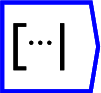
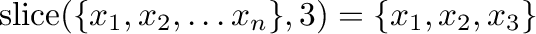
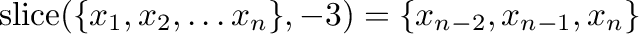

The operator can be placed on the canvas in two ways:
 ;
or
;
or

. If the tensor is rank one (ie a vector), it is not necessary to specify the axis.If the slice argument is negative, then it refers to the number of elements from the end of that axis. For example

.